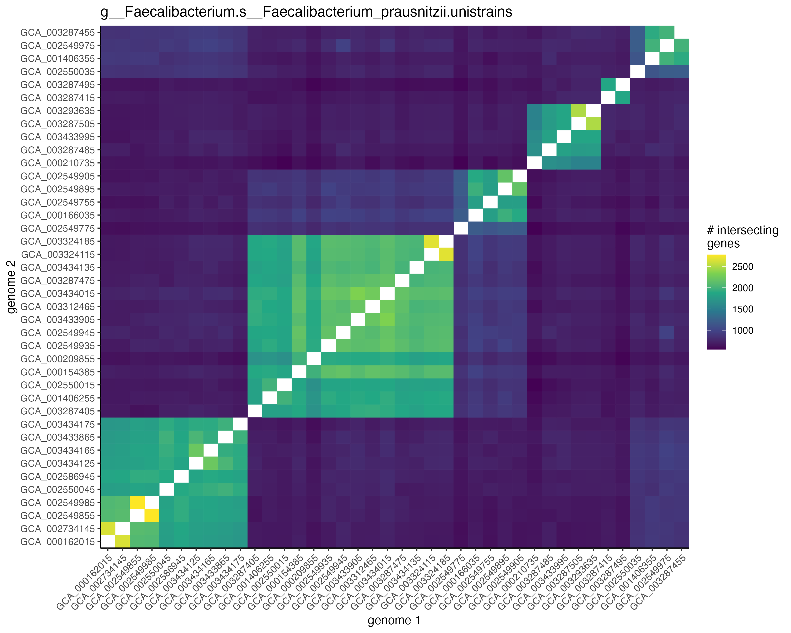

Advanced Topics
The devil is in the details.
Genome comparisons
Sometimes then gene model gives too many hits from a single bug. This can happen if two conditions are met:
- the upstream definition of the genes present in the species is overly broad, improperly clumping multiple distinct sub-species into the same species
- one or more of these sub-species is confounded with the outcome
This will cause all of the genes characteristic of the sub-species to show up as significantly associated with the outcome. That is true in the statistical sense, but it’s not a helpful result when looking for potentially causal genes.
The function plot_genome_intersections() can be used to plot overlaps of genes across isolate genomes in a unistrain files (which are used to define which genes belong to which species in the upstream gene profiling step). Multiple distinct blocks (as shown in the sample below) can cause the problematic “too many hits” phenomenon described above.
unistrain_path = "/path/to/g__Faecalibacterium.s__Faecalibacterium_prausnitzii.unistrains.tsv.gz"
plot_genome_intersections(unistrain_path)
Another method for detecting this phenomenon is to compute a phylogeny based on the gene profiles (see the Estimating phylogenies from gene matrices section), then look for a large-scale, species-wide pattern in the distribution of phylogenetic effects.
We leave the approach to handling this to the user. If the blocking is driven by a single outlier genome, it may make sense to remove the genes unique to that outlier. More complicated cases like the example shown above may require more ad hoc measures, such as separating out the separate genomes and running them through the gene model separately.
Splitting merged HUMAnN outputs
HUMAnN UniRef90 profiles may contain all species merged into a single huge tsv. anpan includes a small shell script that will split a file like this into the per-bug files that are needed to run the gene model. You can find this script on your system like so:
system.file('fsplit', package = 'anpan')## [1] "/tmp/RtmpdwEm5c/temp_libpath45636af9978e/anpan/fsplit"Depending on how you installed the package, you may need to chmod +x /path/to/fsplit in order to give it execute access.
In a shell (not R) would then navigate to your big merged_humann_output.tsv and run
/path/to/fsplit merged_humann_output.tsvThis will:
- create an output folder called
merged_humann_output_split/ - create an output file for each unique bug in the input
- add the original header line to each
- then scan the input with
awkand append each line to the appropriate bug-specific file
It will probably take a few minutes for large input files. The split output folder can then be used as the bug_dir argument in anpan_batch().
The identifiers in the first column of the input must be formatted as gene_id|bug_id e.g. UniRef90_A0A009H1T1|g__Escherichia.s__Escherichia_coli
Lines corresponding to overall gene abundance (where the first column is just gene_id) or where the taxa is unclassified are discarded. The fsplit script isn’t too complicated, so if you’re reading this you can probably figure out how to tweak it if you need those.
Horseshoe gene model
The default model type for the gene model runs a simple glm for every gene in every bug, then FDR corrects the p-values after the fact. While conceptually and computationally simple, this approach has a few disadvantages:
- the dependence between genes is ignored
- the gene coefficients are unregularized
- the coefficients for additional covariates (e.g. age, gender) get estimated repeatedly separately estimated for each gene, increasing the chances of identifying non-impactful genes as hits because they’re confounded with one of the covariates
By setting model_type = "horseshoe" in a call to anpan(), it is possible to use a “regularized horseshoe” model instead. This type of model is described in detail in @piironen_sparsity_2017. Basically, instead of running many small models then FDR correcting, it fits a single model per bug. This has a number of advantages:
- the coefficients for additional covariates (e.g. age, gender) are only estimated once, reducing the chance of finding genes that are confounded with covariates
- the horseshoe incorporates the strong prior knowledge that only a very small proportion of bacterial genes will affect the outcome
- the strong regularization from the horseshoe will tend to pick out the most explanatory genes from sets of collinear genes (if the effects are sufficiently identifiable)
The horseshoe model does this by fitting a single regression model that includes all genes as predictors (as well as any additional covariates like age and gender), with a regularized horseshoe prior on the gene coefficients.
A full explanation of the regularized horseshoe is available in @piironen_sparsity_2017. The coefficients for the genes \(`\beta_j`\) use the following model:
$$_j _j, , c N(0 , ^2 ^2_j ) \ ^2_j = \ _j Cauchy^+(0,1)$$
- \(`\lambda_j`\) are gene-wise (local) shrinkage parameters
- \(`\tau`\) is a global shrinkage parameter
- \(`c`\) controls the degree of regularization on non-zero coefficients
The Stan code used under the hood is adapted from code originally produced by the brms package (@burkner_brms).
anpan(model_type = "horseshoe")The outputs of this model will look largely the same as model_type = "fastglm" except:
- there are no p-/q-values
- and hence no significance stars on the plot
- there are typically far fewer hits
- the error bars on non-zero coefficients are usually very wide
- the output includes MCMC convergence statistics
The main disadvantage of the horseshoe model is that it is much more computationally expensive.
Repeated measures models
If you have data with multiple samples per subject, you can run a subject-wise gene model using anpan_repeated_measures(), and a subject-wise PGLMM using anpan_subjectwise_pglmm(). These functions require providing a subject_sample_map data frame listing the subject_id that goes with each sample_id.
anpan_repeated_measures() performs the standard anpan filtering on all samples, then uses the subject-sample map to compute the proportion of samples with the bug. This gives a gene proportion matrix (instead of a presence/absence matrix) which is then passed to anpan_batch(..., filtering_method = "none", discretize_inputs = FALSE).
If you have a dataset where multiple samples come from the same individual, running a PGLMM on all the samples without accounting for this will return a strong, spurious signal because samples from the same individual will (usually) be right next to each other on the tree and all show the same outcome value. anpan_subjectwise_pglmm() aggregates samples by subject to derive a subject-wise correlation matrix, then runs a PGLMM on that.
Both of these functions aggregate covariate/outcome metadata by subject when applicable. Numerical covariates are averaged, while character, logical, and factor covariates are tabulated, with the most common value selected as the representative. Ties can be re-ordered with factor levels.
Estimating phylogenies from gene matrices
If you don’t have a phylogeny for your data, you can get a very rough estimate in the following manner:
gene_tree = gene_pres_abs_matrix |>
pca() |>
stats::dist() |>
ape::nj() # or ape::fastme.bal() or ape::bionj()This process is sub-optimal in a number of ways (the gene matrix is low signal, Jaccard dissimilarity isn’t the most thoughtful thing to use here, the correlation matrices can end up close to the identity, tree distance is based on functional profile similarity instead of real evolutionary relatedness, etc), but it will give you something that you can pass to anpan_pglmm(). Identifying which genes explain which branching points is left as an exercise for the reader.
The code chunk above won’t run out of the box, you’ll need to plug in your own matrix and pca() function.
If your gene measurements are noisy, it can also be helpful to run some sort of dimension reduction (e.g. PCA) on the input to the dist() function in case the noise in your input matrix is overwhelming phylogenetic differences. The number of principle components to use is debatable, but choosing based on how the of proportion of variance explained dies off can be reasonable. One might choose eigenvalues up to the first eigenvalue that is less than one tenth of the first eigenvalue.
That being said, it’s preferable to estimate phylogenies from the raw data themselves using any of the many tools available in the literature (e.g. StrainPhlAn) rather than doing something ad hoc from the gene matrices. There is a rich literature on the topic of phylogeny estimation, but the topic falls outside the scope of anpan. The preceding code block is mainly intended as a quick-and-dirty, “good enough” method to get a quick look at how relatedness affects the outcome overall.
Offset variables
anpan_pglmm() is able to take a single variable from the metadata and use it as an “offset”. See ?offset() for additional description. Basically, an offset is a variable to be included as a covariate, but the coefficient is known to be exactly 1. The coefficient is not estimated as part of the model. If a given observation has an offset of +0.5, the linear predictor for that observation goes up by +0.5.
Categorical offsets can also be used with binary outcomes, in which case the offset value is taken as the logit(proportion) of the outcome variable by category. In data.table it’s roughly model_input[, offset_value := logit(mean(outcome)), by = offset]. For example an observation from a study with 85% cases will start off with a linear predictor of logit(0.85) = 1.73 before the terms for the global intercept & other covariates get added on.
We originally developed this functionality for study_id variables. The proportion of cases in a given study isn’t really an uncertain quantity, it’s something set by the study designers. So if you want to include one study with mostly cases and another with mostly controls, it makes sense to build that difference into the model without adding additional parameters to estimate. You can set offset = "study_id" in the call to anpan_pglmm() and it will estimate the proportions and display them in a message.
Offsets show up on the color bars on plots after the covariates. They’re always on a continuous scale because the offset value is always a continuous number.
Picking out clade members
This section not done
Tweaking patchwork plots
Most of the theme parameters used in anpan’s plotting functions are set to reasonable defaults, but sometimes real data makes the plots look a bit wonky. Take the PGLMM posterior plot we generated in the [PGLMMs] section:
## elpd_diff se_diff
## pglmm_fit 0.0 0.0
## base_fit -11.8 4.0
The labels are a bit too small. Another common problem with these plots is that for large datasets the tree gets too crowded to see the individual tips.
These can mostly be addressed after the fact with the usual means of altering ggplot. However, many of the plots produced by anpan are composite figures produced by the patchwork package. This adds an additional step to tweaking the plots and making them publication ready. patchwork plots can essentially be accessed as a list with the sub-plots as elements. So the code block below shows three common modifications:
- make the lines thinner on the tree (first sub-plot)
- make the labels bigger and left-justified on the posterior box plots (third sub-plot)
- make the points bigger on the tree
# Thinner lines on the tree
p[[1]]$layers[[1]]$aes_params$size = .2
# Make the sample labels bigger
p[[3]]$theme$axis.text.x = element_text(size = 4.5, angle = 90, hjust = 0)
# Make the points bigger
p[[1]]$layers[[2]]$aes_params$size = 3
p
The details of finding which theme/aes parameters that are needed for additional tweaks are left as an exercise for the reader, but generally typing a dollar sign on a sub-plot p[[2]]$, then looking at the names suggested by RStudio auto-complete can get you pretty far.
You can also use the sub-plot accessor to pull out sub-plots that can then be rearranged in new ways with patchwork::plot_layout(). We have occasionally made huge mega plots with something like the code chunk below.
outcome_tree +
effect_boxplots +
gene_heatmap +
half_correlation_matrix +
plot_layout(ncol = 1)Editing color bar palettes
The palettes used in the color bar can be edited by setting the appropriate scale on the patchwork object. Below I give an example where I change the colors used for gender on the color bar from red/blue to purple/green. With some slight edits to this you could change the color bar on tree plots as well. This github exchange may also be helpful if you’re looking for more information.
p = plot_results(res = res,
covariates = c("age", "gender", "study_name"),
outcome = "crc",
model_input = mi)
color_bar_i = 1 # the color bar subplot in the patchwork
gender_i = 4 # the scale used for gender on the plot
p[[color_bar_i]] # this should print the color bar only
p[[color_bar_i]]$scales$scales # examine the list of scales to find the one you need to set gender_i
aes_name = p[[color_bar_i]]$scales$scales[[gender_i]]$aesthetics
guide = p[[color_bar_i]]$scales$scales[[gender_i]]$guide
guide$available_aes = aes_name
p[[color_bar_i]]$scales$scales[[gender_i]] = scale_fill_discrete(aesthetics = aes_name,
guide = guide,
type = c("purple", "green"))
p[[color_bar_i]] # Now gender is purple/greenConfiguring parallelization and progress reporting
anpan uses the packages furrr and progressr to parallelize and show progress on long calculations, respectively. That means that internally some anpan calculations are written conceptually as “this code might run in parallel” and “this code might display progress”. The user can configure the parallelization plan and progress reporting to their preference.
furrr
See the details on ?future::plan(), but the most common way to parallelize is via multisession:
plan(multisession, workers = 4)This will start up 4 separate R sessions evaluating the appropriate parallelized code.
The exception to this is anpan_pglmm_batch(). This function parallelizes both over bugs and loo calculations for each bug, so typically the fastest way to run is to use Stan’s parallel_chains argument to parallelize the MCMC and a so-called “nested future topology” to parallelize the loo:
plan(list(sequential, tweak(multisession, workers = 6)))
anpan_pglmm_batch(...,
parallel_chains = 4)This is sequential over bugs but parallelizes the 4 MCMC chains for each model and parallelizes the loo calculations over iterations. However depending on the ratio of MCMC time to loo time (and the amount of memory you have available), it might be faster to use a non-nested future topology and simply parallelize over bugs.
There are many future configuration methods that I haven’t tried (e.g. future.batchtools::batchtools_slurm()), so let me know how it goes if you try out something exotic.
progressr
Turning on all global progress reporting is done with this command:
handlers(global = TRUE)From there, you can set up additional handlers to customize the progress reporting. My favorite is:
handlers(handler_progress(format = "[:bar] :current/:total (:percent) in :elapsed ETA: :eta"),
handler_beepr(initiate = NA,
update = NA,
finish = 1))There are also some that are more exciting:
# let's do the fork in the garbage disposal!
handlers(handler_beepr(initiate = NA,
update = 1,
finish = NA,
intrusiveness = 1)) Once you’ve set your preferred handler(s), you can test the reporting with this command:
progressr::slow_sum(1:5)Other anpan functions
This vignette doesn’t overview the usage of every single anpan function (it’s already too long). Here are the other user-accessible anpan functions. They should each have a help page, and you can of course ask additional questions on the bioBakery help forum.
## [1] "anpan" "anpan_batch"
## [3] "anpan_pglmm" "anpan_pglmm_batch"
## [5] "anpan_pwy_ranef" "anpan_pwy_ranef_batch"
## [7] "anpan_repeated_measures" "anpan_subjectwise_pglmm"
## [9] "anpan_vignette" "compute_clade_effects"
## [11] "draw_mvnorm" "filter_batch"
## [13] "filter_gf" "get_cor_mat"
## [15] "get_genome_intersect_counts" "olap_tree_and_meta"
## [17] "plot_cor_mat" "plot_elpd_diff"
## [19] "plot_genome_intersection_histograms" "plot_genome_intersections"
## [21] "plot_half_cor_mat" "plot_lines"
## [23] "plot_outcome_tree" "plot_p_value_histogram"
## [25] "plot_pwy_ranef" "plot_pwy_ranef_intervals"
## [27] "plot_results" "plot_tree_with_post"
## [29] "plot_tree_with_post_pred" "read_and_filter"
## [31] "read_bug"